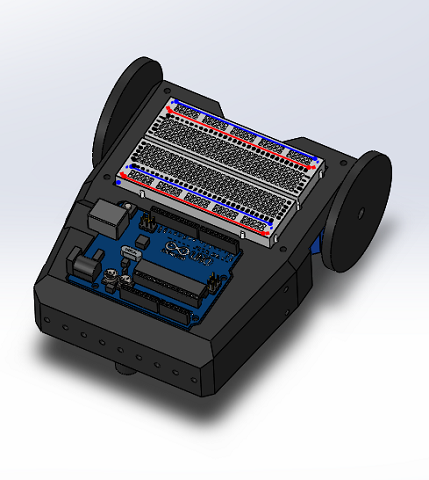
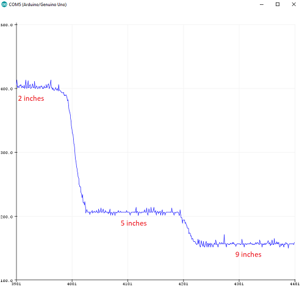

Final Design Overview
Goals
The goal of this class is to build a robot that:
- Starts on a 660Hz tone.
- Traverse a maze following a white line grid.
- Detect and avoid walls.
- Detect and avoid collisions with other robots.
- Send maze topology via radio frequency to a base station that displays the maze on a GUI.
- Identify and mark on the GUI treasures (red or blue shapes) using a camera and FPGA for image processing.
Custom frame design
In order to improve the robustness of our robot we designed and used Ian’s 3D printer to make a custom robot frame. This design holds all of our components in place where we would want them and also allows for future flexibility through its many mounting points.

Microphone
First, we designed a circuit which in conjunction to the FFT library, use different signals to trigger different actions in the robot, such as turning right, left, or moving straight.
The way this circuit works is as follows. The signal starts at the microphone. One leg of the microphone is pulled up to 5 volts through a resistor, the other is set to ground. When sound hits the microphone the microphone alternates the voltage on its pulled up leg as a direct representation of the sound. I then isolate the AC component by passing it through a capacitor. This signal then goes to the noninverting side of an LM358 op amp. In this case we use a 25k resistor and a 50 ohm resistor to amplify by a factor of 501.
If we left it like this we would have a detectable signal. Unfortunately this signal would vary between about +-2.5 volts, so we add a DC offset through two 1k resistors to the noninverting input of the op amp. I also added a capacitor in line with the 50 ohms resistor to make it so the dc offset is not amplified. I then fed this signal to the analog input of the Arduino Uno. This signal is sampled at a rate of 9.5kHz until 128 samples are collected. The way I have it currently setup it can easily detect a signal anywhere between 100hz and 4.25khz. I had to “detach” the servos while sampling or else the PWM interrupts would interfere with sampling.
From there frequency of the whistle is used to control whether the robot is moving straight, turning, or stopped, depending on how high the frequency is. Click here to see full code for this part.
Then, during Lab 2 we modified the code to detect only sound signals of approximately 660Hz. Click here to see full code for this part.
Line Following
We used the provided QRE1113 IR sensors with digital output. These sensors work by us first sending a digital pulse to the output. We then set that same pin to be an input, and time how long it takes to drop back down to logical zero. This is directly proportional to the amount of light the sensor is receiving. We then sample this into an array and convert that data into a one or zero, depending on a threshold.
long readQD(int pin) { //read from IR sensor
pinMode( pin, OUTPUT );
digitalWrite( pin, HIGH );
delayMicroseconds(10);
pinMode(pin, INPUT);
long time = micros();
while (digitalRead(pin) == HIGH && ((micros() - time) < 3000));
return (micros() - time);
}
void read_line() {
for (int i = 0; i < 5; i++) {
line_sens_data_time[i] = readQD(line_sens_pin[i]);
}
}
void conv_to_digi() {
for (int i = 0; i < 5; i++) {
line_sens_data_digi[i] = (line_sens_data_time[i] < threshold);
}
}

In terms of sensor placement, we chose to place 3 sensors in the front of our robot (one in the center, and two on the sides separated at a distance slightly wider than the tape), aligned with the axis of rotation of the servomotors. However, compared to the picture, the final design was inverted, i.e. the front and the back were reversed and sensors were placed near the ball bearing. The reason behind this decision is that the error correction our robot has to make is increasingly smaller as we place the sensors farther away from the wheels. Observe the improved navigation in the following video:
Wall detection
We used the provided SHARP IR sensors provided. We proceeded to test the range of the sensors by connecting them to an analog input in the Arduino, and placing pieces of white cardboard in front of them.
After checking the sensor worked properly, we proceeded to check the magnitude reading of the sensor at different distances, so that we could set a threshold.
This graph allowed us to set an approximate threshold of magnitude 200. That is, when the robot gets to a corner, the threshold should be low enough that the reading of the sensors will exceed it if there is a wall, and trigger the appropriate action.
Two proximity sensors were used for wall-following. We placed one in the front and one in the right. We implemented the following logic to navigate the maze following the walls:
when the robot is at a corner:
if (there is a wall in the right && nothing in the front) go forward;
if (there is a wall in the right && a wall in the front) turn left;
if (there is no wall in the right) turn right;
Robot detection
The IR detection is thoroughly explained in Lab 2. We added code to signal when the robot has detected the IR hat (simulation of other robot, placed at approximately 5.5 inches above ground) using the LED strip, and instruct the robot to avoid the collision. In our case, we decided that the best course of action was to stop wherever it detects the IR signal, and resume motion once it doesn't detect it.
Radio
Because the Arduino has a very limited memory (~2KB), we decided to store all the grid's information in a 2D byte array, where the first and second indices represent the column and row respectively, and the value determines the walls we have observed. We use the following convention, for a block in the grid array, the least significant bit represents if the eastern wall is there, the 2nd bit represents the northern wall, 3rd bit western wall, and 4th bit western wall. We have 4 bits unused, that we might utilize later on for treasure information. Also orientation can be 1 if we are facing east, 2 if we are facing north, 4 if we are facing west, and 8 if we are facing south. And this is done so we can easily multiply the boolean output of the front and right sensors by the orientation and embed it in the grid information byte (of course, shifting (or taking the remainder) is needed when the multipication output is greater than 15) so we can have only one line to compute the new block information.
grid[row][col] |= frontSensor * orientation | rightSensor * orientation * 8 | frontSensor * orientation >> 16 | rightSensor * orientation * 8 >> 16;
To transmit the data, we embed the column, row, and information byte (each of these is one byte) into a long (again, one byte of the long remains unused) and transmit it to the radio. We do the embedding by adding (or using bitwise-OR) and then shift it by the desired amount to fit everything.
The radios were connected to digital pins 9 to 13, and powered with 3.3V. We had to download the RF24 Arduino Library and were given a basic sketch as a guide to build our communication protocol.
Treasure detection
Our team agreed that since there was a high risk of losing more points for false detections than we would have gotten for detected treasures, we should not include the FPGA and camera on our robot. However, you can refer to our Lab 4 to see all the cool work we got to do with image processing.
Bill of Materials
By the end, our robot consisted of:
- 1 3d-printed chassis weighing approximately 300 grams. Price: Free =)
- 2 Arduino Uno boards: one for the robot, and one for the remote base station that updates the GUI. Price: $6.41 each.
- 2 Parallax servomotors. Price: $14.99 each.
- 1 Portable Single USB Power Bank 5V/1A 4000mAh. Price: $10.64.
- 1 electret microphone to detect the 660Hz sound that marks the beginning of the competition. Price: $1.36.
- 3 Sharp IR distance sensors for wall detection. Price: $7.00 each.
- 3 QRE1113 digital IR sensors for line following/corner detection. Price: $2.95 each.
- 1 OP598 phototransistor to detect the 6.08kHz IR signal emitted by other robots to avoid collisions. Price: $0.63.
- 2 Nordic nRF24L01+ transceivers to communicate maze information from the robot to a remote Arduino that updates a GUI with the received information. Price: $3.64 each.
- 1 MOSFET transistor to isolate the wall IR sensors, because they were causing noise in the sound detection circuit. Price: $0.85.
- Note that we decided to not include the camera and FPGA to avoid being docked points for false detections.
- Total estimated cost: $93.41
Final competition analysis
Our robot didn't perform as well as we would've wanted during the competition, but we identified some issues after the first round, and afterwards reflected over what could have been done better. We arrived to the following conclusions:
- Our robot failed the first round because the front and right wall detecting sensors were shorted out, causing false detections and constantly forcing left turns.
- During the second round our robot failed to send some nodes to the GUI, which was caused by a defective connection of our radio to the Arduino. The PCB we made left little room for the radio to be connected directly on the digital pins.
- Our IR detector was so sensitive it was detecting our own IR hat. The sensor positioning (under the hat) was optimal.
- Our whistle detection was ok. We could have done it less sensitive to minimize false detections.
- Our maze mapping, turning and line following kicked butt.
- Our chassis design was by far the coolest.
- We should have used github as a version controlled method from the beginning of the class. Scattered code was the cause of 50% of our problems
- Someone stole one of our batteries =(.
- Collaboration makes this class great.
- Props to Kirsten and all the TA's (shoutout to Thinesiya and Logan).